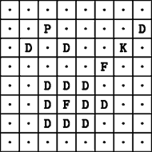

Home Page
F.A.Qs
Statistical Charts
Past Contests
Scheduled Contests
Award Contest
| Online Judge | Problem Set | Authors | Online Contests | User | ||||||
|---|---|---|---|---|---|---|---|---|---|---|
| Web Board Home Page F.A.Qs Statistical Charts | Current Contest Past Contests Scheduled Contests Award Contest | |||||||||
|
Language: Cheesy Chess
Description Any similarity of this problem to the game Chess is completely coincidental. Cheesy Chess is a simple two-person game. It is played on an 8 × 8 board. Each player has one piece. The players take turns in moving their respective pieces. The first player, say White, has a king. In one move, it can move one position in any of the eight directions, horizontally, vertically or diagonally, as long as it stays on the board. The second player, say Black, has a pawn. In one move, it can move exactly one position downwards. In fact, the pieces have to make such moves. They may not stay at their positions. The White king is said to capture the Black pawn, if it moves onto the position currently occupied by the pawn. The aim of the White king is to do exactly this. The aim of the Black pawn is to reach the bottom line of the board safely. As we will see later, however, there are also other ways for White and Black to win. The game is complicated by the presence of forbidden fields and dangerous fields. A forbidden field is a position on the board where neither the White king, nor the Black pawn may come. A dangerous field is a position where the Black pawn may come, but where the White king may not move onto. In addition to the fixed dangerous fields, which are dangerous for the entire game, there are (at most) two other, floating dangerous fields, which depend on the position of the Black pawn. They are adjacent to the pawn’s position: the position to the bottom left and bottom right of the pawn, for as far as these positions exist within the boundaries of the board and are not forbidden. All other positions are called open fields, even if they are occupied by either of the pieces. For example, we may have the following situation, where forbidden fields, dangerous fields and open fields are denoted by 'F', 'D' and '.', respectively, the White king is denoted by 'K' and the Black pawn is denoted by 'P'.  This illustration does not reveal whether the positions occupied by the White king and the Black pawn are dangerous or open, and whether the dangerous fields adjacent to the position of the pawn are fixed dangerous fields or not. Due to a move of the Black pawn, the White king’s position may become dangerous. This is not a problem: in the next move, the White king has to move to another, open field anyway. The White king blocks the Black pawn, if Black is to move, but the position below the pawn is occupied by the White king. In this case, the pawn cannot move. The game ends, when
You have to find out which player will win, given that White is the first player to move and given that White plays optimally. Input The first line of the input file contains a single number: the number of test cases to follow. Each test case has the following format:
Output For every test case in the input file, the output should contain a single line containing the string "White" (if White wins) or "Black" (if Black wins). Sample Input 2 ........ .......D ........ .....F.. ..DDD... ..DFDD.. ..DDD... ........ 7 6 3 7 ........ ........ ........ ........ ........ ........ ........ ........ 3 1 6 3 Sample Output Black White Source |
[Submit] [Go Back] [Status] [Discuss]
All Rights Reserved 2003-2013 Ying Fuchen,Xu Pengcheng,Xie Di
Any problem, Please Contact Administrator